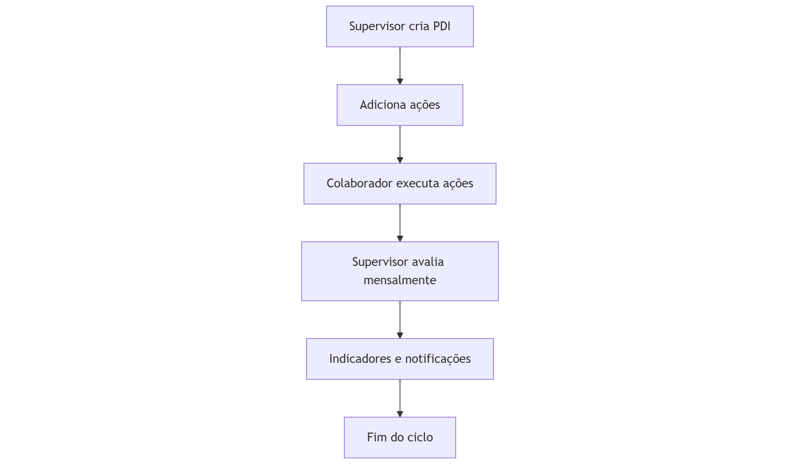
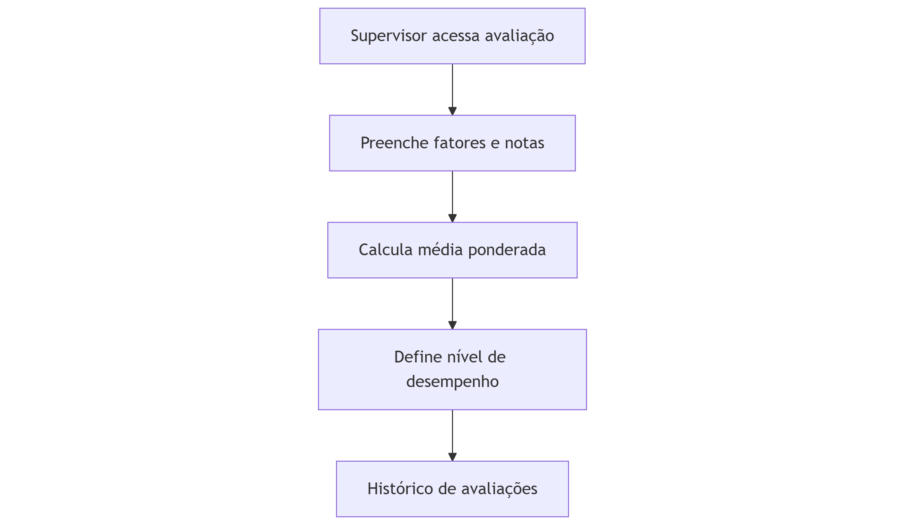

A ConLine é referência em soluções logísticas, facilitando a operação global de seus clientes de maneira personalizada, flexível e ágil. Atua com excelência, ética e inovação, promovendo o desenvolvimento sustentável e o crescimento dos seus colaboradores, parceiros e clientes.
2. Missão, Visão, Valores e Política
Missão
Facilitar a operação logística global de maneira personalizada, flexível e ágil.
Visão
Ser reconhecido como um dos principais agentes de carga a nível nacional.
Valores / Cultura da empresa
Ética
Proatividade
Capacidade de construir bons relacionamentos
Resiliência
Sentimento de dono
Política de empresa:
A Conline se compromete em manter a prestação de serviços logísticos com qualidade e segurança, atendendo os requisitos dos seus clientes em conformidade com os requisitos legais aplicáveis, aprimorando continuamente os processos, e ao mesmo tempo, preservando a lucratividade e a sustentabilidade do negócio. Para isso, é imprescindível o desenvolvimento profissional dos colaboradores e parceiros estratégicos. (Rev01 de 10/07/23).
3. Visão Geral do Módulo de PDI
O módulo de PDI do sistema Sirius é uma solução completa para a gestão do desenvolvimento individual dos colaboradores, permitindo o acompanhamento de planos, ações, avaliações e resultados, promovendo o crescimento profissional alinhado aos objetivos estratégicos da empresa.
4. Funcionalidades Principais
Criação, edição e exclusão de PDIs
Cadastro e acompanhamento de ações de desenvolvimento
Avaliações mensais com fatores personalizados e pesos
Histórico completo de avaliações e ações
Dashboards e indicadores gerenciais
Notificações automáticas por e-mail
Controle de permissões por perfil de acesso
Filtros dinâmicos por colaborador, status, período, etc.
5. Fluxo de Uso (Passo a Passo)
Supervisor/Coordenador
Acessa o dashboard e visualiza indicadores dos PDIs sob sua responsabilidade.
Cria um novo PDI para um colaborador, preenchendo dados e objetivos.
Adiciona ações ao PDI, definindo prazos e responsáveis.
Acompanha o progresso das ações e do PDI.
Realiza avaliações mensais dos colaboradores.
Consulta o histórico de avaliações e evolução dos colaboradores.
Recebe notificações sobre conclusões de ações e PDIs.
Colaborador
Visualiza seus próprios PDIs e ações atribuídas.
Acompanha o status de cada ação e pode anexar evidências.
Recebe feedbacks e avaliações do supervisor.
Consulta o histórico de avaliações e seu progresso individual.
6. Telas do Sistema
Dashboard Principal: Indicadores gerais, gráficos, tabelas de avaliações e ações, filtros dinâmicos.
Gestão do Supervisor/Coordenador: Indicadores específicos, tabelas de avaliações e ações sob sua responsabilidade, filtros.
Tela do Colaborador: Visualização dos próprios PDIs, histórico de avaliações, anexação de evidências.
Tela de Avaliação Mensal: Formulário dinâmico para avaliação dos fatores do PDI, registro de comentários.
Tela de Criação/Edição de PDI: Cadastro e edição dos dados do PDI, adição e edição de ações.
7. Níveis de Acesso e Permissões
Perfil
Visualiza
Cria/edita PDI
Avalia
Anexa Evidências
Gerencia Ações
Recebe Notificações
Supervisor/Coordenador
✔
✔
✔
✔
✔
✔
Colaborador
✔
✖
✖
✔
✖
✔
Administrador
✔
✔
✔
✔
✔
✔
8. Avaliações Mensais e Cálculo de Níveis
Fatores de Avaliação: Personalizáveis por PDI (ex: Comunicação, Proatividade).
Peso dos Fatores: Cada fator pode ter peso diferente.
Cálculo da Média Ponderada:
∑Média = (Soma das notas × peso de cada fator) / Soma dos pesos
Níveis de Desempenho:
Estacionado: 0 a 39,99%
Ajustando a Rota: 40 a 69,99%
Na Rota: 70 a 89,99%
Brilhou na Entrega: 90 a 99,99%
Voando Alto: 100 a 120%
Percentual:
%Percentual = (Média / 5) × 100
9. Gestão de Ações do PDI
Cadastro de ações com descrição, prazo e status.
Status: Pendente, Em Andamento, Concluído, Cancelado, Atrasado.
Conclusão pode exigir anexos/evidências.
Atualização automática do status do PDI conforme progresso das ações.
10. Indicadores e Dashboards
Total de PDIs, em andamento, concluídos, atrasados.
Distribuição por perfil (gráfico de pizza).
Avaliações por período (gráfico de barras).
Últimas avaliações (tabela com filtro de colaborador).
Ações dos PDIs (tabela com filtros).
11. Fluxogramas dos Principais Processos
Fluxo de Criação e Acompanhamento do PDI

Fluxo de Avaliação Mensal

12. Diferenciais do Sistema
Interface intuitiva e responsiva
Filtros dinâmicos e busca rápida
Notificações automáticas por e-mail
Controle de permissões robusto
Histórico completo de avaliações e ações
Cálculo transparente de médias e níveis
Possibilidade de anexar evidências nas ações
13. Conclusão
O módulo de PDI do sistema Sirius, da ConLine, oferece uma solução robusta, flexível e transparente para o desenvolvimento de pessoas, promovendo o crescimento individual e organizacional, com acompanhamento contínuo, avaliações justas e indicadores claros para tomada de decisão.